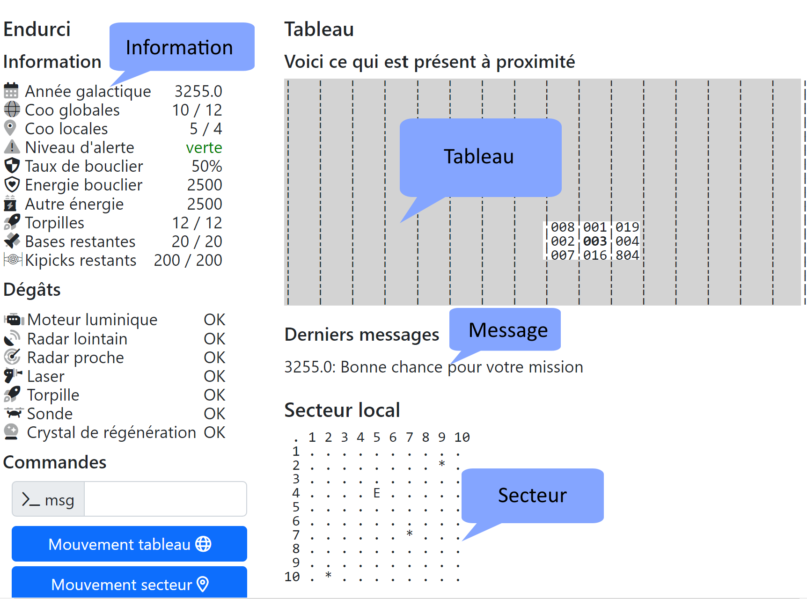
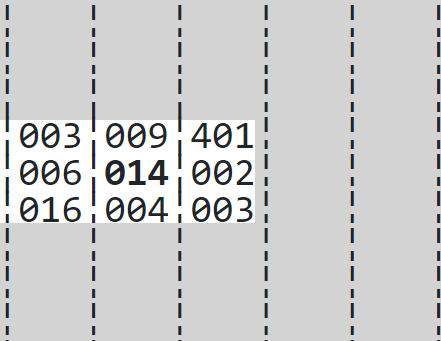
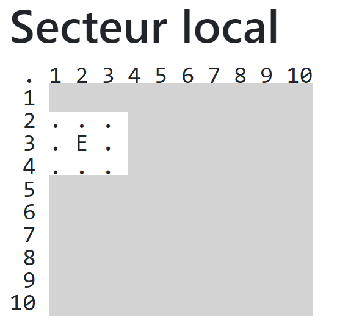
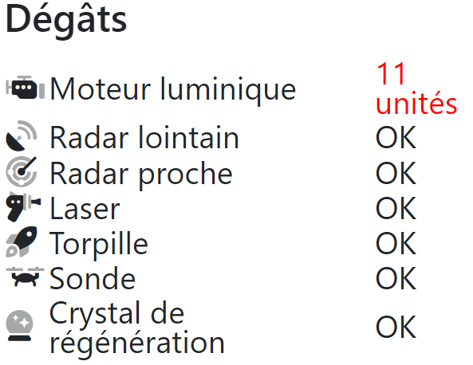
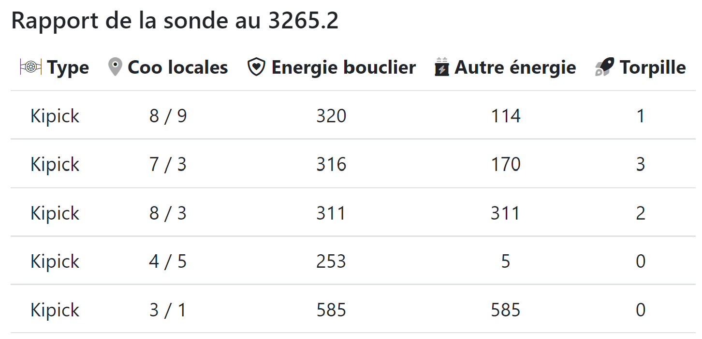

Aide en ligne de Starium
But du jeu
Le but du jeu est de neutraliser tous les Kipicks qui sont dans le tableau. Pour cela, vous disposez de votre vaisseau appelé l'Endurci.
Ecran principal
Quatre grande zones composent votre écran :
- A gauche, les informations sur le jeu, l'état de votre vaisseau, ses dommages et la ligne de commande.
- En haut, le tableau représente la carte l'espace connu dans cette zone. Par défaut, rien n'apparaît puisque c'est la zone qu'il vous reste à découvrir.
- En dessous, les messages du jeu qui contiennent le résumé des dernières actions et leurs résultats.
- En bas, le secteur qui affiche le détail de ce qui vous entoure. Il s'agit de votre environnement proche.

Le tableau

La partie haute de l'écran est appelée le tableau. Il contient des données sur toute la partie de la galaxie dans laquelle vous vous trouvez. Par défaut, vous ne voyez rien car vous êtes en plein territoire Kipick, là où personne n'a encore été. Vous voyagez en territoire inconnu, c'est pourquoi il vous faut de temps en temps scanner au radar l'endroit où vous êtes pour pouvoir détecter d'éventuels ennemis. Tous les secteurs qui apparaissent en gris sont des zones non encore explorées.
Lorsqu'un secteur a déjà été exploré, le tableau donne ses informations sous forme d'un nombre de 3 chiffres :
ex: 812 8--> il y a là 8 Kipicks
1--> --------- 1 Base
2--> --------- 2 Etoiles
Il peut également y avoir un + dans les chiffres du tableau : 10+ signifie qu'il y a là un Kipick et plus de 9 étoiles.
Le tableau est automatiquement remis à jour si jamais vous détruisez quelque chose dans le secteur. Il peut malheureusement arriver qu'à la suite d'un choc très violent, votre tableau soit totalement anéanti. L'ordinateur se charge alors d'en refaire un le plus vite possible.
Lorsque vous arrivez sur un secteur que vous n'avez pas encore découvert, le tableau est automatiquement mis à jour en ajoutant ce nouveau secteur à la base de données de l'ordinateur.
Dans le tableau, le secteur dans lequel se trouve l'Endurci est mis en gras.
Le secteur
En bas à droite, l'écran blanc est le récapitulatif de ce que vous détectez dans la région la plus proche de vous. L'appareil responsable de cette détection est un radar de courte portée très fragile. Il faudra en prendre soin car ils sont les yeux de votre vaisseau. Chaque secteur s'étend de 10 cases sur 10 cases.

Il peut arriver par malheur que cet écran devienne noir à la suite d'un choc important ou si l'énergie est insuffisante pour faire fonctionner correctement les radars de courte distance. Voici alors comment apparaît votre écran. Vous ne voyez que ce qui se situe à seulement une case de votre vaisseau. De cette manière, il est très difficile de voir où se trouvent les ennemis. Il faut faire attention quand les Kipicks jouent car on peut parfois les repérer grâce à la lumière de leur laser.
Sur ce radar, apparaît tout ce que l'on peut trouver à proximité immédiate du vaisseau. Chaque objet est représenté par une lettre. Voici les différents objets que vous pouvez trouver :
'*' est une étoile
'B' est une base de ravitaillement
'K' est un ennemi. C'est un Kipick
'E' est votre vaisseau : l'Endurci
'#' est une torpille
Détail d'un secteur
L'écran de contrôle
En haut à gauche, se trouvent les données du tableau de bord de votre vaisseau. C'est à cet endroit que vous pouvez vous rendre compte de son état de santé.
Année galactique : vous disposez d'un temps limité pour accomplir votre mission. Ce compteur vous permet de savoir où vous en êtes. Une réforme du temps a été faite. Dans l'espace, le temps ne compte que 10 mois galactiques. Vous remarquerez que le temps s'écoule rapidement puisque nous sommes sur de longues distances.
Coo globales X / Y : il s'agit de votre position sur le tableau. Par défaut, le tableau compte 16 x 16 secteurs.
Coo locales X / Y : il s'agit de votre position dans un secteur en particulier. Par défaut, chaque secteur compte 10 x 10 cases.
Niveau d'alerte : l'alerte détermine dans quel état vous vous trouvez. Voici les différents types d'alerte :
Alerte Verte Rien à signaler, tout se passe bien, votre niveau d'énergie est correct voire très correct et il n'y a pas d'ennemi à proximité immédiate. Alerte Jaune Il n'y a pas d'ennemi dans le secteur mais par contre, il faudrait peut-être commencer par chercher une base ou rester un moment en régénération pour pouvoir recharger les batteries. Eviter cependant tout combat, vous ne pourriez pas vous en sortir vivant. Alerte Rouge Des ennemis se trouvent dans le même secteur que vous. Vous devez combattre. Alerte Critique Vous vous trouvez en plein combat mais vous n'avez pas assez d'énergie pour pouvoir gagner. Le plus sage serait de partir pour trouver une base mais les Kipicks risquent alors de recharger leurs batteries.
Energie : Votre Energie totale est séparée en 2 blocs : l'énergie du bouclier et les autres énergies. Le taux du bouclier vous donne le pourcentage de répartition de ces deux énergies. Le transfert d'énergie n'est cependant pas immédiat et il va vous falloir un certain temps si vous voulez vous constituer un puissant bouclier. Par contre, ne mettez pas trop d'énergie dans le bouclier si vous voulez vous servir de cette énergie dans les lasers ou le radar. L'idéal est de conserver un taux de 50/50 afin de pouvoir parer à toutes les éventualités. Si jamais vous n'avez plus d'énergie dans le bouclier, les autres énergies se mettent en place pour un bouclier très superficiel qui empêche le vaisseau de se détruire mais ne lui empêche pas de subir des dégâts plus ou moins importants suivant la puissance du choc. Si par un grand malheur, votre énergie arrive à 0, vous perdez la partie! Votre vaisseau a été détruit.
Torpilles : Ce contrôle vous indique le nombre de torpilles qu'il vous reste. Lorsque vous arrivez à 0, vous ne pouvez plus utiliser cette arme.
Kipick restant : Votre mission consiste à détruire tous les Kipicks d'un tableau. Ce contrôle vous indique combien il en reste et combien il y en avait au départ. Dès que vous arrivez à 0 kipick, vous avez gagné le jeu.
Base restante : Ce contrôle vous indique combien de base sont encore disponibles et combien il y en avait au début du jeu.
Les dégâts

En plus de l'état de votre vaisseau, vous voyez les différents dommages qu'il a subi. Les éléments qui peuvent être endommagés sont les suivants :
moteur luminique il s'agit de la commande 1 (bouger) pour les déplacements sur le tableau radar courte porté lorsqu'il est endommagé, vous ne voyez plus ce qui se passe dans le secteur au-delà de une case du vaisseau. Autant dire que vous êtes aveugle. radar longue porté il s'agit de la commande 3. Endommagé, vous ne pouvez plus détecter ce qu'il y a dans les secteurs à proximité. laser commande 4. Endommagé, vous ne pouvez plus utiliser le laser. torpille commande 5. Endommagé, vous ne pouvez plus utiliser les torpilles. sonde commande 8. Endommagé, vous ne pouvez plus lancer de sonde pour voir l'état énergétique des ennemis. cristal de régénération lorsque cet élément est endommagé, vous ne rechargez plus vos batteries. Autant dire que c'est critique.
Liste des commandes
Commande 1 : mouvement du vaisseau
La commande 1 ou les boutons "Mouvement tableau" et "mouvement secteur" permettent de faire bouger le vaisseau. Deux choix vont alors s'offrir à vous :
- soit vous voulez voyager dans le secteur, de proche en proche en quelque sorte
- soit vous voulez faire un plus long parcours et voyager de secteur en secteur ce qui est nettement plus rapide car vous pouvez utiliser de moteurs capables de parcourir plusieurs secteurs d'un coup.
Tout dépend de la distance que vous souhaitez parcourir. Il faut cependant noter que le voyage de secteur en secteur peut être endommagé par un tir ennemi. Vous devrez alors voyager de proche en proche dans le secteur.
Une fois la décision prise, le vaisseau vous demande le nombre de cases dont vous voulez voyager. Il peut très bien s'agir du nombre de cases sur le tableau ou dans le secteur. Si vous dépassez les bords d'un secteur, vous changerez de secteur. Lors d'un voyage à longue distance, le vaisseau va d'abord prendre de la vitesse. Assurez-vous que la voie est libre pour éviter d'entrer en collision avec une étoile ou un ennemi. S'il y a une collision, l'ordinateur annulera le voyage. Vous risquez de recevoir un dégât.
Ensuite, l'ordinateur vous demande quel cap prendre. L'univers étant plat, vous n'avez pas besoin de vous demander où il vous faut aller dans le plan de la largeur. La direction qu'il demande est celle de la direction en degré qu'indique une simple boussole. Voici ci-dessous les degrés à utiliser en fonction des directions.

Chaque case parcourue dure 1 mois galactique. PS: Il y a 10 mois galactiques dans une année galactique.
Commande 2 : régénération
La commande 2 vous permet de vous immobiliser totalement dans le but de recharger vos batteries. La recharge permet de récupérer environ de l'ordre de 4% d'énergie par mois. Plus vous resterez longtemps, plus votre niveau d'énergie augmente. Il ne peut cependant pas dépasser la limite imposée par votre vaisseau. Il vous faut également veiller au temps qui risque de passer nettement plus vite.
Durant ce temps, vous pouvez également réparer des dégâts qui ont eu lieu. Dans ce cas, vous aurez un message vous signalant une réparation.
A noter que ceci profite également à vos ennemis qui ont aussi le temps de se régénérer et de réparer leurs dégâts. Lorsque des ennemis sont présents dans le secteur, cette commande n'est pas disponible.
Commande 3 : radar longue portée
Le radar (commande 3) vous permet de scanner tout ce qu'il y a autour de votre vaisseau spatial. Sa portée étant limitée, il ne peut scanner que dans un rayon de un secteur à la ronde dans le tableau. Si vous êtes sur un bord du tableau, le scan se fait de l'autre côté. Le radar peut être endommagé. Une analyse radar coûte en général 20 unités d'énergie.
Commande 4 : laser
Le laser (commande 4) est une des armes les plus puissantes sur le marché. Vous indiquez le niveau d'énergie que vous voulez qu'il envoie. Chaque Kipick recevra un coup de ce laser haute performance. Il vous faudra malheureusement ménager vos batteries, car elles mettent plus de temps à se recharger que le laser n'en met à les décharger. Chaque coup que reçoit votre ennemi est proportionnel à sa distance par rapport à vous. Le laser peut être endommagé.
Commande 5 : torpille
Les Torpilles (commande 5) sont très efficaces contre les Kipicks qui ont encore beaucoup d'énergie en réserve. Leur nombre étant limité, vous devez en faire bon usage et surtout ne pas vous tromper dans la direction en degré pour l'envoyer. Les torpilles n'ont pas de tête chercheuse, car les Kipicks ont inventé un système de brouillage semblable au vôtre. C'est ce qui explique qu'il faut entrer l'angle en degré. Votre principale difficulté sera de bien viser votre ennemi, mais vous devriez y parvenir facilement ! Les Torpilles peuvent être endommagées. Pour rappel, voici les différents angles de visée :
Commande 8 : sonde
La commande 8 vous permet d'envoyer une sonde pour espionner les Kipicks. Elle vous donne de précieuses informations notamment en ce qui concerne leur état énergétique ou leur nombre de torpilles. Elle peut s'avérer utile lorsque vous hésitez entre le laser ou une torpille. Cette commande peut être endommagées.
Voici le rapport que vous obtenez avec la sonde. La première colonne vous indique le type d'ennemi puis vous avez la position dans le secteur. Ceci peut servir dans le cas où la détection à courte portée est endommagée. Vous voyez ensuite l'énergie, l'énergie du boulier et le nombre de torpilles qu'il reste à l'ennemi.

Commande 9 : taux du bouclier
La commande 9 vous permet de changer le taux du bouclier. Ce taux ne sera pas atteint directement car on ne peut pas transférer toute une portion d'énergie en un délai aussi court. Par contre, au fil du temps, les deux énergies convergeront vers le taux que vous avez demandé. Attention de bien garder un petit peu d'énergie pour le reste du vaisseau pour pouvoir continuer la mission.
Commande 12 : passer son tour du bouclier
La commande 12 vous permet de passer votre tour. S'il y a des Kipicks dans le secteur, c'est alors à eux de jouer.